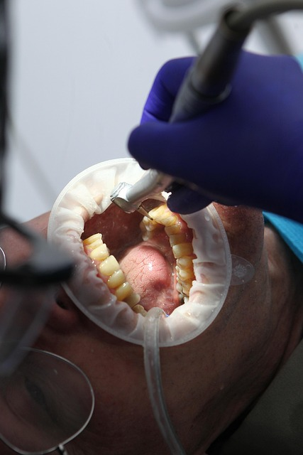

Our Dental Services
From routine cleanings to emergency care, we offer a full range of dental services to keep you and your family smiling.

Professional Care You Can Trust
Our team uses modern techniques and equipment to deliver safe, effective treatment. Whether you need a routine check-up or a specific procedure, you're in capable hands.
Our Services
Teeth Cleaning
Professional scaling and polishing remove plaque, tartar, and surface stains. Regular cleanings help prevent gum disease and cavities. We recommend a cleaning at least twice a year.
Teeth Whitening
Safe, effective whitening treatments to brighten your smile. We use quality products and techniques to achieve noticeable results while protecting your enamel.
Tooth Extraction
When a tooth cannot be saved or needs to be removed for orthodontic or other reasons, we perform gentle extractions with care for your comfort and healing.
Dental Fillings
We treat cavities with durable fillings that restore tooth shape and function. Options include tooth-colored materials for a natural look.
Children's Dentistry
We welcome children for check-ups, cleanings, fluoride treatments, and education on brushing and diet. Our goal is to make dental visits positive and stress-free.
Emergency Dental Care
For severe pain, broken or knocked-out teeth, or other urgent issues, we offer emergency dental care. Contact us at 08111615853 or 08033807912 for prompt assistance.
Removable Dentures, Fixed Bridges & Obturators
We fabricate removable dentures, fixed bridges, and obturators to replace missing teeth. These restorations restore your smile, chewing function, and confidence—whether you need a full or partial denture, a bridge, or an obturator after surgery.
Root Canal Treatment & Crowns
For grossly decayed or damaged teeth, we provide root canal treatment followed by post-retained acrylic or porcelain crowns. This saves the tooth, relieves pain, and restores strength and appearance for the long term.
Book an Appointment
To schedule a visit for any of our services, call 08111615853 or 08033807912, or use our contact form.
Contact Us